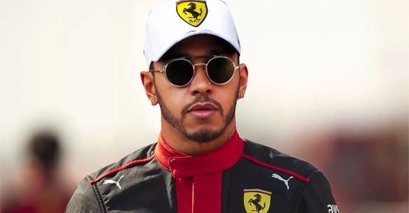
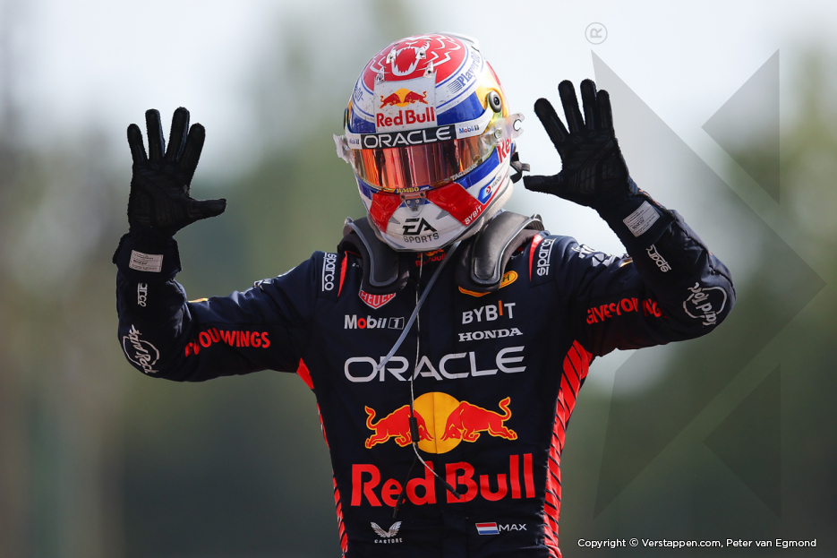
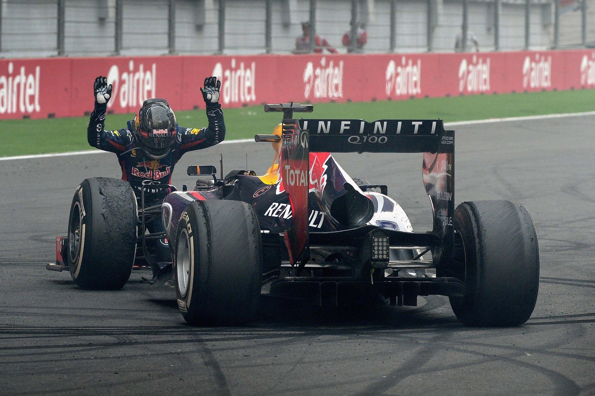
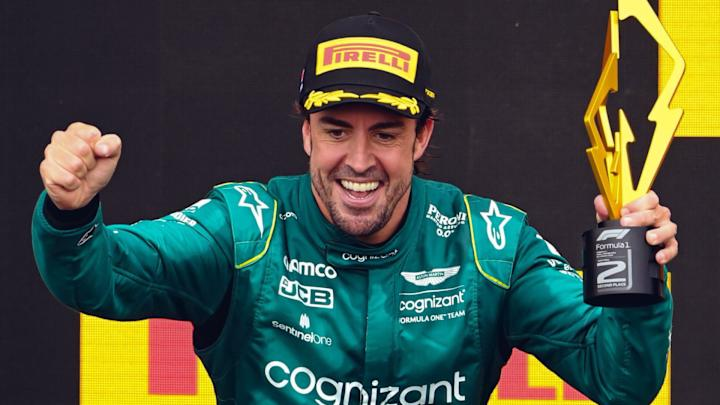

| De-a lungul decadelor, Formula 1 a fost martora unor performanțe remarcabile și unor recorduri care continuă să inspire noi generații de piloți și fani. Iată o prezentare a celor mai importante recorduri din istoria acestui sport: |  | În ceea ce privește titlurile mondiale, Lewis Hamilton și Michael Schumacher dețin recordul pentru cele mai multe campionate câștigate de un pilot, fiecare având câte 7 titluri mondiale. Schumacher a dominat în special la începutul anilor 2000, iar Hamilton, cu ajutorul echipei Mercedes, și-a asigurat titlurile sale între 2008 și 2020, stabilindu-se ca unul dintre cei mai constanți și talentați piloți din istoria sportului. |
| Recordul pentru cele mai multe victorii în carieră aparține tot lui Lewis Hamilton, care a acumulat 105 victorii până în prezent, depășind recordul anterior deținut de Schumacher. În același timp, Hamilton deține și recordul pentru cele mai multe pole positions, cu 104 pole-uri, demonstrând o abilitate extraordinară de a obține cei mai buni timpi în calificări, ceea ce i-a oferit un avantaj crucial în numeroase curse. | ||
| În sezonul 2023, Max Verstappen a stabilit un nou record pentru cele mai multe victorii într-un singur sezon, câștigând 19 curse. Performanța sa a depășit recordurile anterioare și a reflectat superioritatea echipei Red Bull în acel an. Verstappen a doborât și recordul pentru cele mai multe victorii consecutive, câștigând 10 curse la rând în același sezon - o realizare care subliniază dominanța olandezului și a echipei sale. În același timp, Red Bull a avut și cel mai mare procentaj de victorii din istoria Formulei 1 cu 95.45%. |  | Un alt record important este deținut de Michael Schumacher, care a realizat 77 de tururi rapide în carieră, ceea ce subliniază capacitatea sa de a menține o viteză maximă constantă pe întreaga durată a cursei. În ceea ce privește numărul de podiumuri, Lewis Hamilton deține recordul, cu 196 de podiumuri obținute până în prezent, ceea ce reflectă o constanță rar întâlnită în istoria sportului. |
| Sebastian Vettel a devenit cel mai tânăr campion mondial din istoria Formulei 1 în 2010, câștigând titlul la doar 23 de ani și 134 de zile. În contrast, Juan Manuel Fangio rămâne cel mai bătrân campion mondial, obținându-și ultimul titlu la 46 de ani în 1957, într-o perioadă în care sportul era mult mai periculos, iar tehnologia mai puțin avansată. | ||
| Un alt record notabil este pentru cea mai rapidă cursă din istoria Formulei 1, stabilit de Michael Schumacher în 2003 la Marele Premiu al Italiei, pe circuitul de la Monza. A finalizat cursa în 1 oră, 14 minute și 19 secunde, la o viteză medie de 247,585 km/h, stabilind un record de viteză care a rămas neegalat |  | Hamilton deține, de asemenea, recordul pentru cele mai multe puncte acumulate în carieră, cu peste 4.800 de puncte, ceea ce evidențiază consistența și succesul său continuu. În ceea ce privește numărul de curse disputate, Fernando Alonso este deținătorul recordului, cu peste 370 de curse începute în cariera sa (2024). Debutat în 2001, Alonso a avut una dintre cele mai lungi cariere din istoria sportului și încă concurează la nivel înalt, dovedindu-și reziliența și pasiunea pentru acest sport. |
| În clasamentul echipelor, Ferrari se află în top, deținând recordul pentru cele mai multe titluri de campion la constructori: un total de 16 titluri, ceea ce reflectă tradiția și performanțele echipei italiene în Formula 1 de-a lungul decadelor. | ||
| Longevitatea carierei lui Alonso este evidențiată și de faptul că el deține recordul pentru cea mai lungă carieră în Formula 1: 22 de ani între debutul său din 2001 și sezonul 2024. Este o dovadă a longevității și a capacității sale de a se adapta la noile tehnologii și provocări ale sportului. |  | Un alt record interesant este deținut de Max Verstappen, care a devenit cel mai tânăr pilot care a participat într-o cursă de Formula 1, debutând la doar 17 ani și 166 de zile la Marele Premiu al Australiei din 2015. Aceasta a fost o realizare extraordinară, făcută posibilă printr-o excepție a regulamentului, recunoscând talentul său neobișnuit de la o vârstă atât de fragedă. |